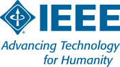
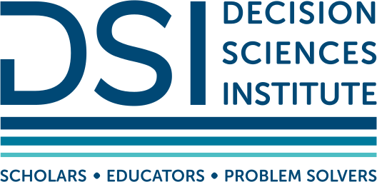
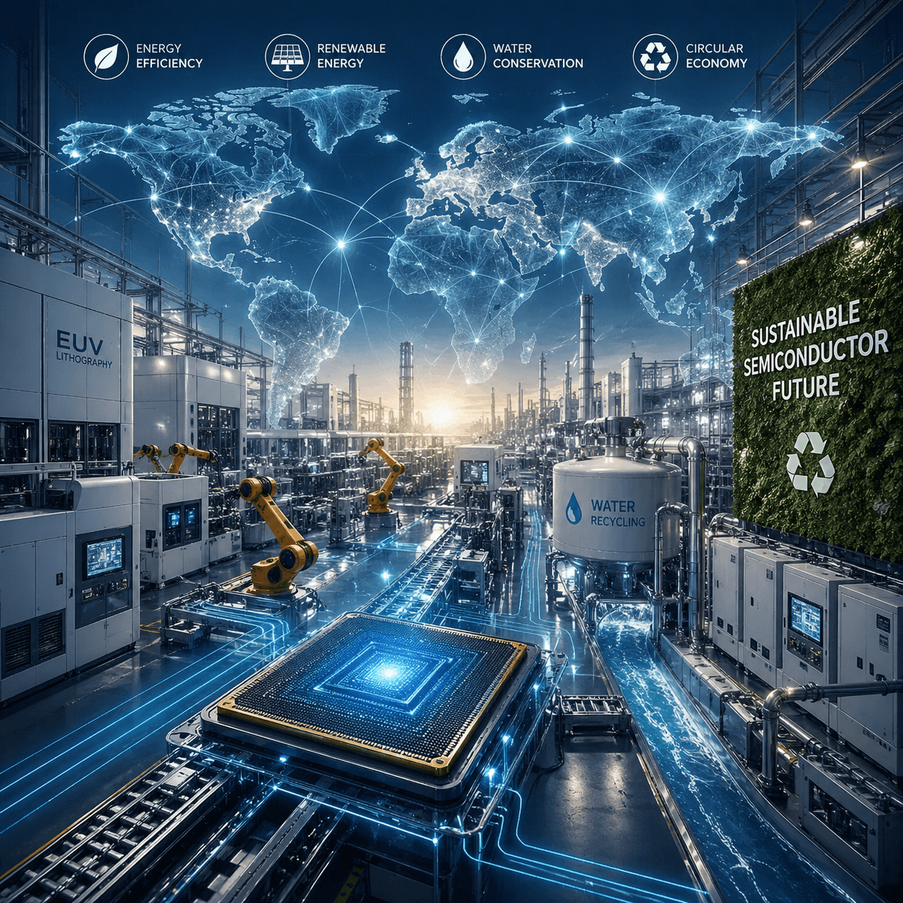
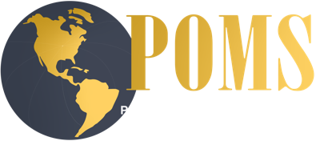

News
Updates on publications, media coverage, and conference presentations.

Invited Talk, IEEE Women in Sustainability Series
An invited talk, "Rethinking Sustainability and Resilience in Semiconductor Supply Chains," will be presented as part of IEEE's Women in Sustainability Series.
Event details →
Invited Session at the DSI Conference 2026
Research will be presented at an invited session at the Decision Sciences Institute (DSI) Annual Conference, November 2026. More details to follow.

Featured in The Science Matters
Research on sustainability and risk management in semiconductor supply chains was featured in the article "The Hidden Sustainability Challenge Inside the Global Chip Industry."
Read the article →
Invited Session at POMS, Reno
Presented "Teaching Algorithms the Art of the Deal: Lessons from Reverse Auction Blunders" at an invited session of the Production and Operations Management Society (POMS) Conference in Reno.
Invited Session at DSI, Phoenix
Presented "Navigating Supplier Relationships in the Virtual Work Environment: Lessons from the COVID-19 Pandemic" at an invited session of the Decision Sciences Institute (DSI) Conference in Phoenix.